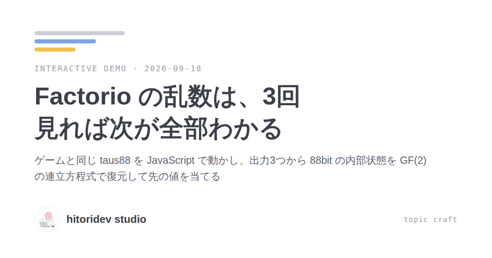

2026-09-18デモFactorio の乱数は、3回見れば次が全部わかる
ゲームと同じ taus88 を JavaScript で動かし、出力3つから 88bit の内部状態を GF(2) の連立方程式で復元して先の値を当てる
 2026-09-18記事
2026-09-18記事13体の AI が Git の履歴だけを共有し、12日間研究し続けた
NVIDIA の Agora は、研究の結果・仮説・検証を Git のコミットとして積む共有メモリ。13体のエージェントが司令塔なしで 1,703 件を投稿し、訓練なしのモデル初期化で GPT-2 との差の 62% を詰め、互いの再現 165 件に失敗はなかった
© 2026 hitoridev studio · GitHub · MIT License